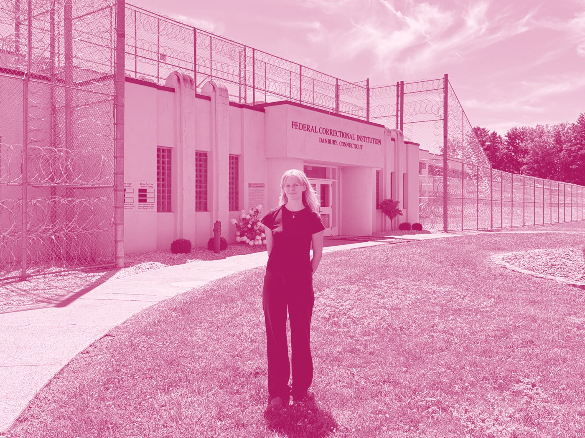
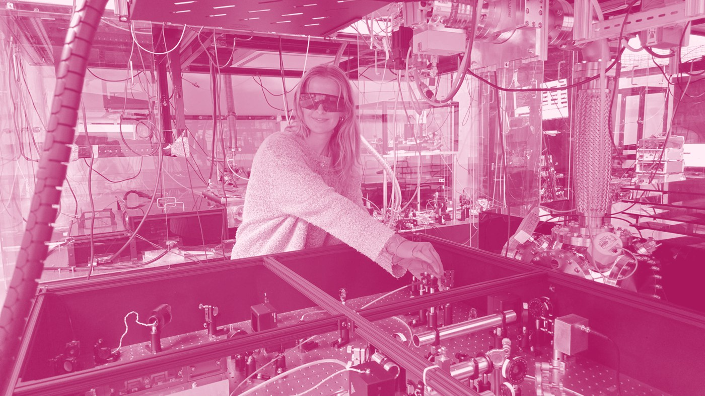
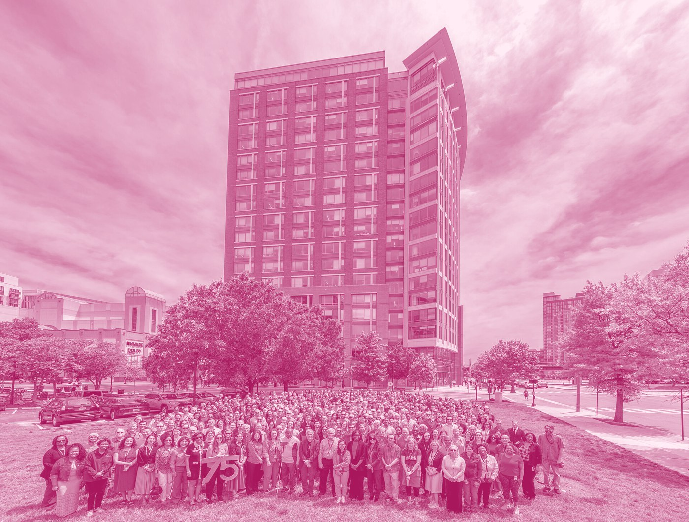

TeachingAugust 2026

Teaching the Physics of Light at a Federal Prison
Yale Wright Laboratory →
FellowshipOctober 2025

Marshall Plan Foundation Fellowship to TU Wien
Yale Wright Laboratory →
AwardJune 2025

NSF Graduate Research Fellowship
Yale Wright Laboratory →